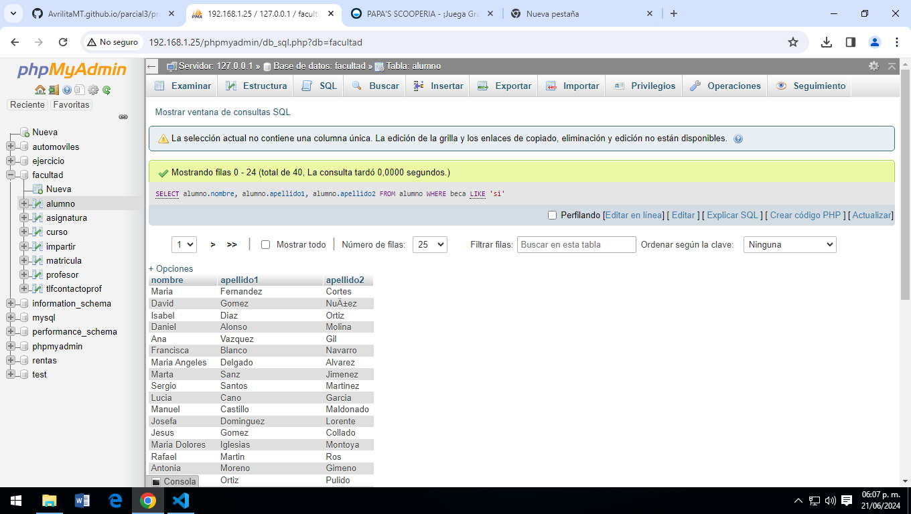
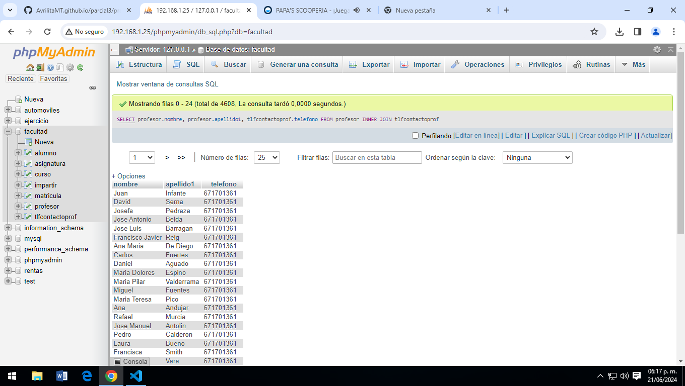
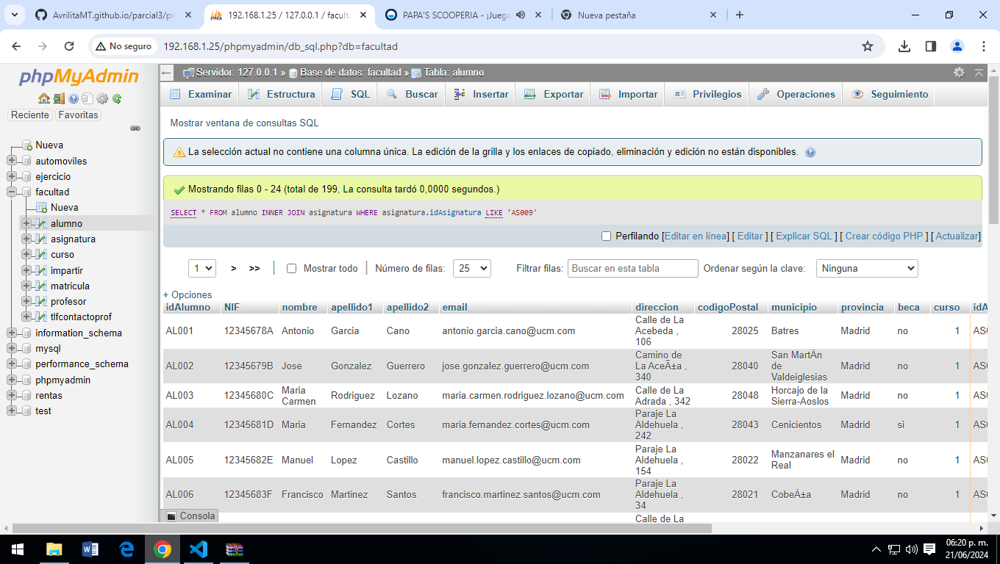
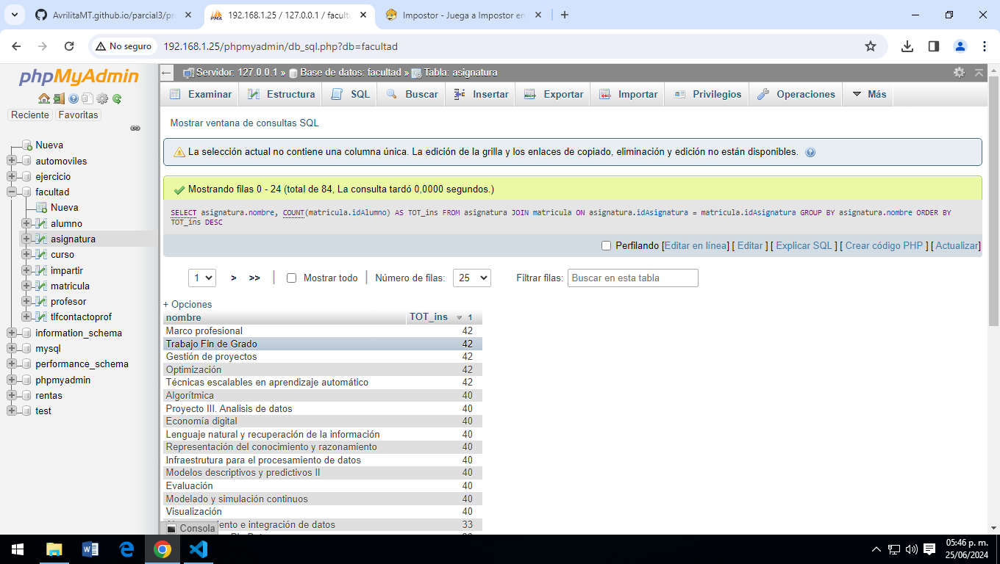
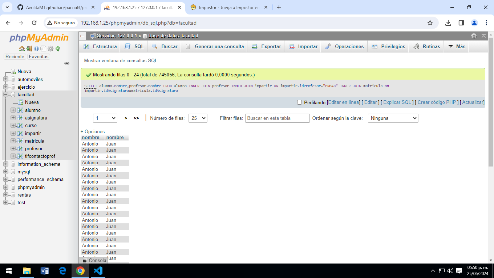
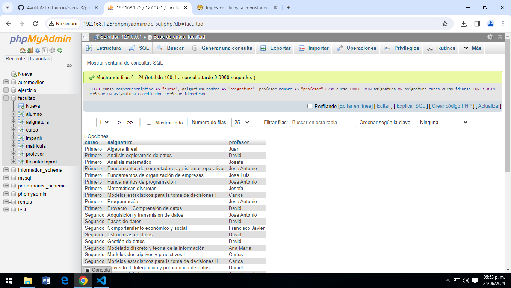
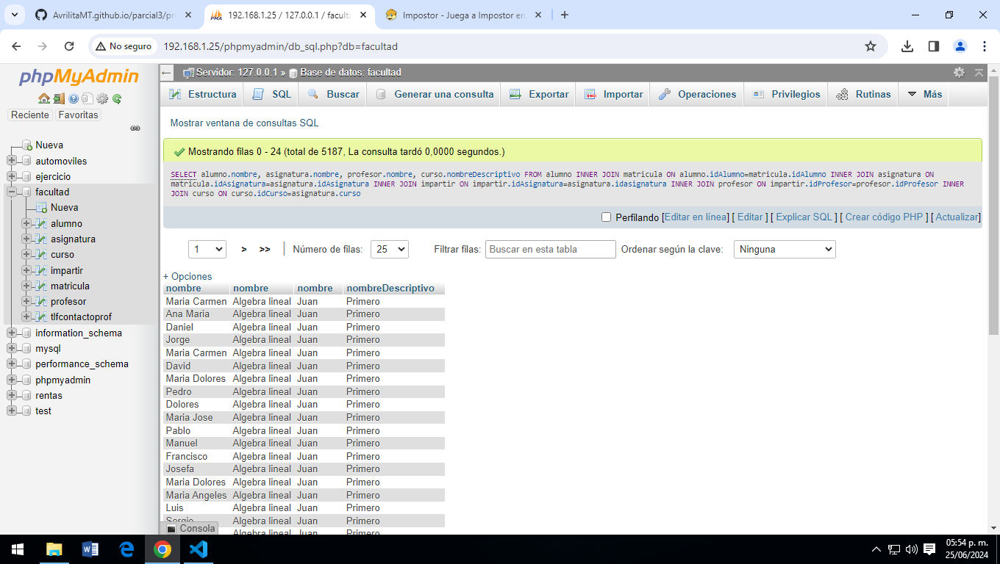

Proyecto Final Parcial 3
SELECT * FROM alumnos;
Consula #1. Obtener el listado de todos los alumbnos de la facultad.

SELECT curso.nombreDescriptivo, asignatura.nombre FROM curso INNER JOIN asignatura ON curso.idCurso = asignatura.curso
Consula #2. Mostrar el curso y el nomnre de la asignatura.

Consula #3. Obtener listado (nombre y apellido) de los alumnos que tengan beca.
SELECT alumno.nombre, alumno.apellido1, alumno.apellido2 FROM alumno WHERE beca LIKE 'si'
Consula #4. Obtener listado de profesores con nombre y apellido, y su numero de contacto.
SELECT profesor.nombre, profesor.apellido1, tlfcontactoprof.telefono FROM profesor INNER JOIN tlfcontactoprof;
Consula #5. Obtener listado de alumnos (todos los campos) que estan inscritos a la asignatura de programacion.
SELECT * FROM alumno INNER JOIN asignatura WHERE asignatura.idAsignatura LIKE 'AS009';
Consula #6. Obtener listado de profesores y asignaturas que imparten.
SELECT profesor.nombre, asignatura.nombre FROM profesor INNER JOIN impartir ON profesor.idProfesor = impartir.idProfesor INNER JOIN asignatura ON impartir.idAsignatura=asignatura.idAsignatura;

Consula #7. Mostrar la asignaturas que tiene mas alumnos inscritos y su total.
SELECT asignatura.nombre, COUNT(matricula.idAlumno) AS TOT_ins FROM asignatura JOIN matricula ON asignatura.idAsignatura = matricula.idAsignatura GROUP BY asignatura.nombre ORDER BY TOT_ins DESC;
Consula #8. Obtener listado de alumnos que les da clase el profesor con id pro48 (jose Manuel), sin importar en que asignatura este inscrito.
SELECT alumno.nombre,profesor.nombre FROM alumno INNER JOIN profesor INNER JOIN impartir ON impartir.idProfesor="PR048" INNER JOIN matricula on impartir.idAsignatura=matricula.idAsignatura;
Consula #9. Obtener listado de cursos, con asignatura y el maestro que las imparte.
SELECT curso.nombreDescriptivo AS "curso", asignatura.nombre AS "asignatura", profesor.nombre AS "profesor" FROM curso INNER JOIN asignatura ON asignatura.curso=curso.idCurso INNER JOIN profesor ON asignatura.coordinador=profesor.idProfesor;
Consula #10. Obtener listado de alumnos, con asignaturas que cursa, profesor que la imparte y el curso al que pertenece .
SELECT alumno.nombre, asignatura.nombre, profesor.nombre, curso.nombreDescriptivo FROM alumno INNER JOIN matricula ON alumno.idAlumno=matricula.idAlumno INNER JOIN asignatura ON matricula.idAsignatura=asignatura.idAsignatura INNER JOIN impartir ON impartir.idAsignatura=asignatura.idasignatura INNER JOIN profesor ON impartir.idProfesor=profesor.idProfesor INNER JOIN curso ON curso.idCurso=asignatura.curso;
